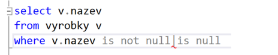

Jazyk-SQL-vnorene-prikazy
Otázky
co je to vnořený SELECT
na co se používá
jaké znáš predikáty
Vnořené SELECTy
= podselect
lze použít ve všech DML příkazech, v selectu i ve všech klauzolích
musí být uvnitř ()
počet podselectů není omezen, ale větší počty zpomalují DB
jako první se provádí nejvíce vnořený podselect
Predikáty
Between
výraaz pro stanovení rozsahu dat v SELECTu
musí mít počáteční i konečnou hranici
NULL
vybere záznam, který je buď nulový nebo nenulový
IS NULL
IS NOT NULL

LIKE
výraz pro hledání záznamů obsahující určitá písmena/znaky

IN
vrací záznamy, které jsou v daném rozsahu a splňují podmínku

EXISTS
vybere záznam, kde existuje nějaká naše požadovaná hodnota, která splňuje podmínku

SOME, ANY
jsou to synonyma, používají se stejně a vrací stejné záznamy
vratí true když některé záznamy splňují podmínku

ALL
vrátí true, když všechny záznamy splňují podmínku
Sum-up
Vnořený select--> musí být uvnitř (), lze použí pro dodatečné a přesnější hledání
Predikáty
BETWEEN
NULL
LIKE
IN
EXISTS
SOME, ANY
ALL